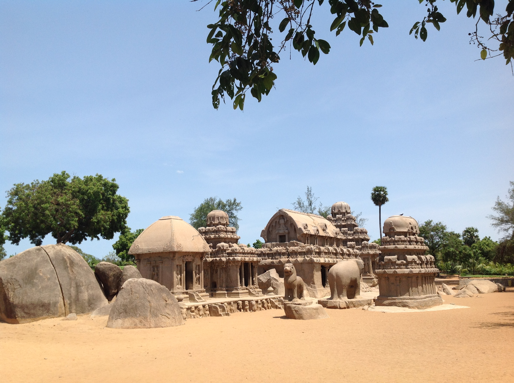

Tourist Attraction
Shore Temple

The Shore Temple in Mahabalipuram is a stunning 8th-century stone temple dedicated to Lord Shiva, located on the Bay of Bengal's shore. It boasts graceful pyramidal towers and intricate sculptures carved from solid granite. The temple complex includes shrines to both Lord Shiva and Lord Vishnu, adorned with captivating bas-reliefs depicting Hindu deities and mythological stories. The temple's coastal setting, especially at sunrise or sunset, provides a mesmerizing backdrop, making it a UNESCO World Heritage Site and a must-visit for its historical, spiritual, and artistic significance.
Krishna's Butter Ball
Krishna's Butter Ball in Mahabalipuram is a massive natural rock formation, about 6 meters in diameter, perched on a steep hillside. Its peculiar name comes from its resemblance to a dollop of butter about to fall off a plate, and it's a captivating sight for visitors. Despite its appearance, this colossal boulder has defied gravity for centuries, remaining firmly in place. It's a unique geological wonder that offers a fascinating photo opportunity and a testament to the mysteries of nature.
Five Rathas
The Five Rathas in Mahabalipuram are a remarkable collection of monolithic rock-cut temples, each sculpted from a single block of granite. These temples, dating back to the Pallava dynasty, exhibit diverse architectural styles and are dedicated to various deities and characters from Hindu mythology. Notable among them are the Dharmaraja Ratha, Bhima Ratha, Arjuna Ratha, Nakula Sahadeva Ratha, and Draupadi Ratha. These temples, resembling chariots and showcasing intricate carvings, offer a fascinating insight into ancient Indian art and architecture. The Five Rathas are a UNESCO World Heritage Site and a must-visit for those interested in India's rich cultural heritage.
Accomodations
Taj Fisherman's Cove Resort & Spa, Chennai⭐⭐⭐⭐⭐
Situated on the site of an Old Dutch Fort, Taj Fisherman’s
Cove Resort & Spa offers 5-star luxury by Chennai’s
|
Price from
$80 per night |
Hotel Mahabs⭐⭐⭐⭐
Hotel Mahabs is located in the Mahabalipuram Beach district
in Mahabalipuram, 1.1 km from Mahabalipuram. |
Price from
$50 per night |
Travel tips
- Best Time to Visit: The ideal time to visit Mahabalipuram is during the winter months, from November to February, when the weather is pleasant and comfortable.
- Entry Fees: Many of the historical sites in Mahabalipuram, including the Shore Temple and Five Rathas, have entry fees. Be prepared to pay these fees, and it's a good idea to carry cash.
- Footwear: Remember to wear comfortable shoes as you'll be exploring various temples and monuments, some of which may have uneven surfaces.
- Local Cuisine: Don't miss the opportunity to savor South Indian cuisine. Try dosa, idli, seafood, and other regional specialties at local restaurants and eateries.
- Transportation: The town is well-connected by road to Chennai, which is about a 2-hour drive away. You can also hire local auto-rickshaws or rent a bike to explore the town.
- Emergency Numbers: Keep a list of important contact numbers, including your embassy, local police, and emergency services, handy in case of any unforeseen situations.